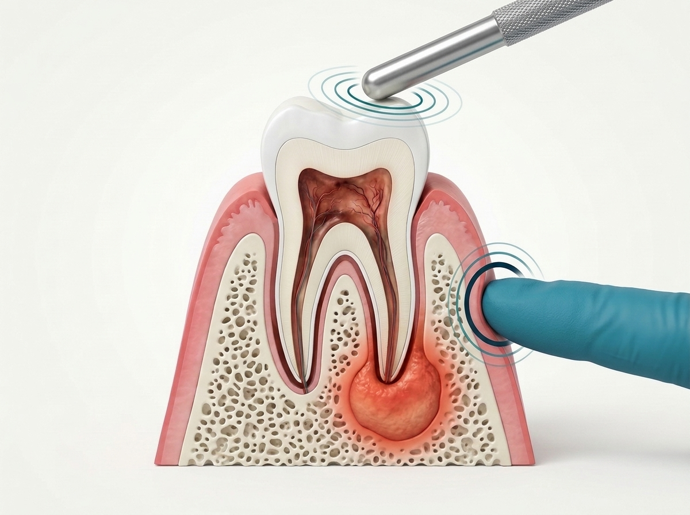

NT-04: Chẩn đoán bệnh lý quanh chóp: Phân loại, gõ, sờ, hình ảnh và đánh giá tổn thương

Khi vi khuẩn và độc tố từ một tủy răng bị viêm nặng hoặc hoại tử thoát qua lỗ chóp chân răng, "chiến trường" không còn giới hạn bên trong chiếc răng nữa mà lan ra vùng mô quanh chóp — gồm dây chằng nha chu, xương ổ răng và xê-măng chân răng. Chẩn đoán chính xác bệnh lý quanh chóp giúp bác sĩ xác định mức độ lan rộng của nhiễm trùng, đánh giá tiên lượng giữ răng và quyết định phương án can thiệp phù hợp nhất theo triết lý Nha khoa can thiệp tối thiểu (MID).
1. Phân loại bệnh lý quanh chóp theo AAE (Hiệp hội Nội nha Hoa Kỳ)
Việc phân loại chuẩn hóa giúp tránh nhầm lẫn giữa các giai đoạn cấp tính và mạn tính:
- Mô quanh chóp bình thường: Không nhạy cảm khi gõ hoặc sờ; trên X-quang, khoảng dây chằng nha chu đều đặn và phiến cứng (lamina dura) còn nguyên vẹn.
- Viêm quanh chóp có triệu chứng (Symptomatic Apical Periodontitis): Bệnh nhân đau rõ khi nhai hoặc chạm vào răng, gõ dọc rất đau. Hình ảnh X-quang có thể bình thường hoặc chỉ giãn nhẹ dây chằng nha chu. Lưu ý: tình trạng này có thể xảy ra cả trên răng còn tủy sống (do sang chấn khớp cắn hoặc viêm tủy lan chóp) lẫn răng đã hoại tử tủy.
- Viêm quanh chóp không triệu chứng (Asymptomatic Apical Periodontitis): Thường phát hiện tình cờ trên phim X-quang với vùng thấu quang quanh chóp rõ nét (u hạt hoặc nang chân răng) trên một chiếc răng đã hoại tử tủy (thử tủy âm tính) nhưng bệnh nhân không đau nhức.
- Áp xe quanh chóp cấp (Acute Apical Abscess): Khởi phát nhanh, đau dữ dội, cảm giác răng trồi cao, sưng nề mô mềm trong miệng hoặc ngoài mặt, có thể kèm sốt và nổi hạch. Độc lực vi khuẩn mạnh khiến dịch mủ tích tụ dưới áp lực cao.
- Áp xe quanh chóp mạn (Chronic Apical Abscess): Tiến triển âm thầm, ít hoặc không đau nhờ có lỗ rò (sinus tract) dẫn lưu mủ ra niêm mạc nướu hoặc ngoài da. Bệnh nhân thường thấy một "nốt mụn nhỏ" hay chảy dịch trắng vàng trên lợi.
- Viêm xương tụ đặc (Condensing Osteitis): Phản ứng tạo xương đặc cản quang quanh chóp trước kích thích viêm mức độ thấp kéo dài, thường gặp ở răng hàm lớn hàm dưới.
2. Kỹ thuật Gõ và Sờ: Đôi tay cảm nhận phản ứng mô quanh chóp
- Nghiệm pháp Gõ (Percussion): Thực hiện bằng đầu ngón tay trước (nếu bệnh nhân đang đau cấp) hoặc gõ nhẹ bằng cán gương nha khoa theo hai hướng:
- Gõ dọc (theo trục răng): Kích thích trực tiếp vùng dây chằng quanh chóp. Dương tính mạnh trong viêm quanh chóp cấp và áp xe quanh chóp cấp.
- Gõ ngang (vuông góc trục răng): Giúp gợi ý tổn thương dây chằng nha chu thành bên (bệnh nha chu hoặc nứt dọc chân răng).
- Luôn gõ trên các răng khỏe mạnh xung quanh theo thứ tự ngẫu nhiên để tránh bệnh nhân đoán trước.
- Nghiệm pháp Sờ (Palpation): Dùng đầu ngón tay trỏ ấn nhẹ dọc theo ngách tiền đình tương ứng vùng chóp chân răng. Nếu bệnh nhân nhăn mặt đau, có khối phồng mềm (lùng nhùng dịch mủ) hoặc mất bản xương ngoài cứng chắc, chứng tỏ quá trình viêm đã xuyên qua vỏ xương ra dưới màng xương hoặc niêm mạc.
3. Đánh giá tổn thương qua hình ảnh và bẫy chẩn đoán
- Phim X-quang quanh chóp: Là bước không thể thiếu để quan sát sự liên tục của lamina dura, độ rộng khe dây chằng nha chu và kích thước vùng thấu quang quanh chóp. Nếu có lỗ rò, bác sĩ sẽ luồn một côn Gutta-percha số #25–#30 vào đường rò trước khi chụp X-quang (Fistulography) để truy tìm chính xác chiếc răng thủ phạm — tránh mở nhầm răng lân cận.
- Giới hạn của phim 2D: Một tổn thương quanh chóp chỉ hiện rõ trên phim 2D khi đã tiêu hủy đến phần xương vỏ (cortical plate) hoặc làm mỏng ranh giới xương xốp – xương vỏ. Do đó, ở giai đoạn cấp mới khởi phát, phim X-quang hoàn toàn có thể trông "bình thường".
- Chẩn đoán phân biệt với tổn thương không do nội nha: Cần phân biệt thấu quang quanh chóp do tủy hoại tử với các cấu trúc giải phẫu bình thường (lỗ cằm, xoang hàm, ống răng cửa) hoặc các bệnh lý lành tính không do răng (loạn sản xương xê-măng quanh chóp — nơi răng vẫn thử tủy dương tính bình thường!).
Lời khuyên từ Bác sĩ Trịnh Công Vương
Một chiếc "mụn nhỏ ở lợi" hay cảm giác răng hơi nhức khi cắn vào không phải là chuyện vặt có thể tự uống thuốc giảm đau cho qua. Đó là tín hiệu cho thấy nhiễm trùng đã đi tới vùng quanh chóp xương hàm. Điều trị nội nha sớm và kiểm soát vô khuẩn tốt sẽ giúp cơ thể tự lành thương xương quanh chóp mà vẫn giữ nguyên được chiếc răng thật.
Địa chỉ: Số 15 đường Võ Nguyên Giáp, phường Đức Xuân, tỉnh Thái Nguyên
Hotline & Zalo tư vấn trực tiếp: 0912 343 858 · Website: https://tcvuong6-wq.github.io/bsvuong-web/